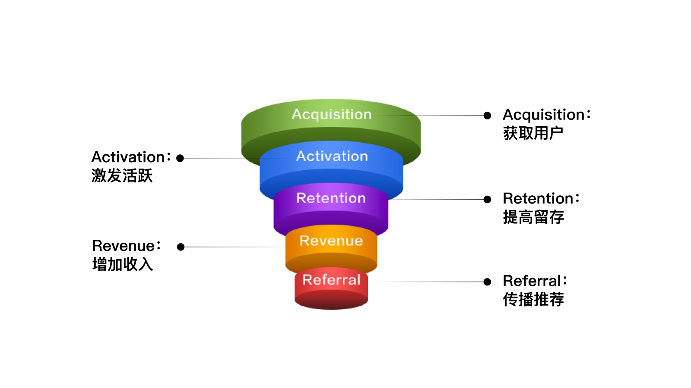
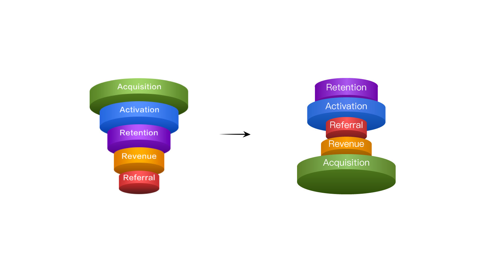
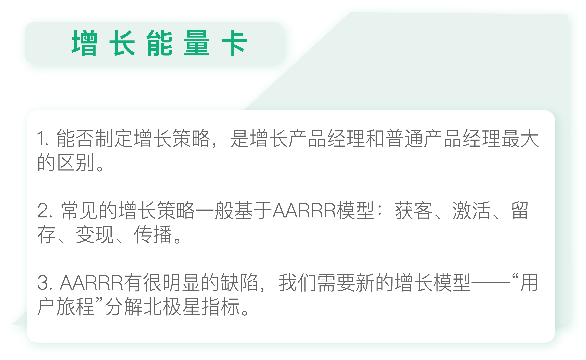

- 00 开篇词 人人都是增长官.md
- 01 预习 增长小白如何“弯道超车”？.md
- 02 预习 如何理解“增长”？.md
- 03 预习 不同职能如何做好增长？.md
- 04 预习 做增长如何处理职能间的矛盾？.md
- 05 正确目标找不对，天天加班也枉然.md
- 06 活学活用北极星指标.md
- 07 OKR如何助力增长？.md
- 08 不懂用户调研？那就对了！.md
- 09 调研目标：在差异性洞察中找到爆破点.md
- 10 数据分析：在“花式对比”中发现玄机.md
- 11 用户分类：围绕北极星指标细分人群.md
- 12 用户访谈：像侦探一样寻找破案线索（上）.md
- 13 用户访谈：像侦探一样寻找破案线索（下）.md
- 14 提炼用户差异，发现增长契机.md
- 15 挖掘产品优势，打破增长瓶颈.md
- 16 定位营销差异，抢占用户心智.md
- 17 一级方向：找到增长爆破点.md
- 18 B端产品如何调研？.md
- 19 全局规划增长机会.md
- 20 统筹全局的用户增长地图.md
- 21 案例解析：定义关键增长指标.md
- 22 正负双向洞察，找准切入点.md
- 23 二级机会：制定增长策略.md
- 24 为一家濒临破产的公司制定增长策略（上）.md
- 25 为一家濒临破产的公司制定增长策略（中）.md
- 26 为一家濒临破产的公司制定增长策略（下）.md
- 27 为什么指标数据怎么优化都不提升？.md
- 28 案例解析：打造增长闭环（上）.md
- 29 案例解析：打造增长闭环（下）.md
- 30 案例解析：唤醒沉睡用户（上）.md
- 31 案例解析：唤醒沉睡用户（下）.md
- 32 没有分解，就无缘增长.md
- 33 四个要点颠覆传统需求文档.md
- 34 三级落地：无限场景应用.md
- 35 手把手教你设计一次成功的实验（上）.md
- 36 手把手教你设计一次成功的实验（下）.md
- 37 积少可成多，别针换别墅.md
- 38 四级延续：增长组件库案例.md
- 39 以用户为中心增长.md
- 增长导航图 增长专栏的知识架构是怎样的？.md
- 尾声 结束意味着新的开始.md
- 预习答疑 你需要一张思维导图吗？.md
19 全局规划增长机会
你好，我是刘津。
今天我们终于来到了第三个模块：发现“四两拨千斤”的增长机会。
这个模块内容不多，但却起到了非常重要的承上启下的作用。在这一模块里，我们沿着北极星指标和一级战略方向，通过用户增长地图梳理若干二级增长策略，然后再具体落地执行。
虽然大部分一线工作者接触的都是具体的执行工作，但是如果我们能够再往前跨一步，了解具体的增长策略是怎么制定出来的，那你无疑就在人生的职场道路上向前跨出了一大步。
能否制定增长策略，也是市场稀缺的增长产品经理和普通产品经理最大的区别。
增长黑客最爱的“AARRR”
怎么制定增长策略呢？
常见的增长黑客惯用思路是通过AARRR模型找到增长机会点。虽然在这里我并不打算用这个方式，但作为基础还是为你简单介绍一下。

AARRR是Acquisition（获取用户）、Activation（激发活跃）、Retention（提高留存）、Revenue（增加收入）、Referral（传播推荐）这五个单词的缩写，它们分别对应一款移动应用产品生命周期中的5个重要环节。
1.获取用户
比如通过线下线上广告推广或福利刺激，让更多新用户下载应用。
2.激发活跃
如果用户仅仅下载应用却不使用的话是没有意义的。所以，除了新增下载量以外，还要关注活跃度。比如，大家常说的DAU（日活）、MAU（月活）等指标。此外，还有使用时长、启动次数等相关指标。
通常情况下，活跃用户是指在指定周期内有启动的用户。但是“启动”未必等于“真的活跃”。具体采用什么指标，如何定义活跃用户，要看产品类型和诉求。比如，对于新闻产品，日活就很重要；而对于借款产品，日活就相对不那么重要了。
3.提高留存
有些应用在解决了活跃度的问题以后，又发现了一个新问题：用户来得快、走得也快。这就说明这款应用没有粘性，也就是留存率低。
通常情况下，保留一个老客户的成本要远远低于获取一个新客户的成本，而留住老客户考验的是产品的核心价值。
如果产品没有自己的核心价值，只专注于疯狂拉新，那就好像朝一个有大窟窿的桶里倒水，一方面不断地开拓新用户，另一方面又不断地有大量用户流失，最终得不偿失。
4.获取收入
这应该是最核心的部分。不论是获客、激活、留存还是传播，最终都是为了获取收入。
如果没有收入或看不到获取收入的前景，产品就无法存活，尤其是在人口红利萎缩、资本越来越慎重的当下。即便是免费应用，也应该有盈利的模式，比如功能付费或者广告。
5.传播推荐
以往的运营模型到第四个层次就结束了。
但是随着社交网络的兴起，病毒式传播成为获取用户的一个新途径。这种方式成本低、效果好。但它的前提是产品自身要足够好，对用户来说有核心的价值，有很好的口碑。
从传播推荐到再次获取新用户，形成了一个螺旋上升的轨迹，优秀的应用在这个过程中不断扩大用户群体，发展得越来越好。
AARRR模型代表了完整的用户生命周期，它让我们可以从更全面的角度看到产品获取用户的过程，这里包含了推广、运营、产品、设计等方方面面。
如果只看其中一部分，而忽视其它部分，或只关注自己职能“份内”的事情，任由用户在其它部分自生自灭，那么产品是一定做不好的。
增长黑客的崛起，就是因为它不再按照运营、产品、推广等职位区分工作内容，而是贯穿用户生命周期做用户增长，所以取得了很好的效果。
为什么“AARRR”落伍了？
不过AARRR也有它的缺陷和瓶颈。
好的地方是：AARRR很符合增长的要求，打破职能墙，从用户的角度关注他们使用产品的整体过程及数据情况。
坏的地方是：时代在发展，产品类型也越来越多样化，但它并不能兼容所有情况。下面我们一个一个地说明。
首先，随着人口红利的萎缩，获客成本越来越高了。
从几年前的几毛钱，慢慢提高到几块钱、几十块，甚至几百上千块。这让越来越多的企业开始转而关注留存及传播推荐。
然而，不管是做好留存还是做好裂变，本质上都是要先把产品价值做上去。也就是说，用户增长的前提是你要有一个好的产品。
在这种情况下，有人甚至提出把AARRR改成RARRA，即先关注留存、再关注激活、然后是传播推荐、变现、最后才是获客。也有人提出，产品发展到一定阶段，才需要增长黑客上场，否则增长黑客来了也没用。

这样的话，相当于把营销推广和产品价值体验割裂开来了。但其实，两者是密不可分的。产品在任何阶段，都需要提升产品价值的“慢功”以及营销推广的“快功”同时运用，以发挥更大功效，这就意味着我们需要新的增长模型。
第二，AARRR模型不适用于所有类型的产品。
早期的产品类型比较单一，AARRR还是比较通用的。但是近几年，产品类型越来越多样化、垂直化，AARRR能适用的情况也越来越有限了。
比如，对于B端产品来说，最重要的是能把产品卖出去，能有收入，并且客户能持续购买、持续付费。所以，维护客户关系、提供定制化的解决方案是非常重要的。况且，B端产品用户量小、数据也少，未必需要像C端产品那样要紧盯着激活、留存等数据。
再比如，宜人贷借款这样的产品，更重要的是每个步骤的转化，而不是看留存、传播推荐等数据。因为借款用户的使用周期很长，再次使用可能要几年之后，所以留存数据意义不大。借款用户也不太可能去跟别人分享借钱的经历，所以让用户自发传播也是不太可行的。
也就是说，AARRR里的数据在实际工作中未必都用的到，要看产品的具体情况。而每个产品需要看的关键指标也是不一样的。
第三，AARRR过于宽泛，无法起到具体的指导作用。
我们看很多围绕AARRR展开的增长案例都会有这样的困惑：这个策略怎么定出来的？为什么获客这部分要这么做？我的产品好像并不适用耶，那我应该怎么做？……
这是因为如果只把AARRR作为增长策略的框架，那实在是太简单了。单说获客这一点，可能就有成百上千种做法。这就导致了市面上虽然有大量的增长案例，但真的就只是案例，很难被复用，因为背后没有详细的可供指导的方法论做基础。
第四，AARRR不是线性流程。
获客、激活、留存、变现、传播表面看是流量漏斗，但实际上并不完全遵循漏斗的线性规律，更像是五个独立的部分。所以，这个模型其实是个半成品：它比按照职能分类要先进得多，但尚未做到完全从用户角度出发、彻底打通增长路径。
那我们具体该以什么为指导去规划增长路径呢？答案就是用户旅程。
因为做增长既要以用户为中心，突破职能从全局视角审视，又要考虑最终想要达成的最大价值。那么最好的方式莫过于通过用户旅程分解北极星指标，得到最适合自己产品的增长框架。这比粗略的按照AARRR来划分要合理的多。
用户旅程分解北极星指标
什么是用户旅程？它就是用户接触产品的全部过程。
当然不是要记录每一个可能的分支过程，而是要记录关键过程。所谓关键过程，就是和达成北极星指标有直接关系的行为。
比如，一个电商网站，它的北极星指标是销售额。那么对于这个电商网站来说，比较重要的和北极星指标相关的用户旅程可以是：潜在用户看到广告→下载App→打开App→选择商品加入购物车→结算并支付成功。
这里面的每一个行为节点，都有对应的数据指标。比如下载App对应着下载率，打开App对应着打开率等等。这些关键的数据指标之间也有关系。比如，广告浏览量×广告转化率×下载率×打开率×购物车加车率×购物金额=销售额。
当然我这里写的非常简单，实际的情况会复杂很多。这里只是作为一个示意，帮助你理解。
通过用户旅程分解北极星指标，我们面对任何产品，都能够快速“定制化”地输出增长路径。然而，这只是制定增长策略的第一步。在下一讲，我会再继续展开介绍。

思考题
请基于北极星指标，写出你的产品的关键用户旅程。
欢迎把你的思考和疑问通过留言分享出来，与我和其他同学一起讨论。
如果你觉得有所收获，也欢迎把文章分享给你的朋友。
© 2019 - 2023 Liangliang Lee. Powered by gin and hexo-theme-book.